Contents
- Controller synthesis using SReachSet for a Dubin's vehicle
- Problem formulation: Stochastic reachability of a target tube
- Verification via SReachSet
- Dubin's vehicle dynamics
- Target tube definition
- Convex chance constrained approach
- Lagrangian over approximation
- Lagrangian under approximation
- Testing the controller using a far-away (from target) safe initial
- Plot the set
Controller synthesis using SReachSet for a Dubin's vehicle
This example will demonstrate the use of SReachTools for the problem of stochastic reachability of a target tube. We consider a continuous-state discrete-time linear time-varying (LTV) system. This example script is part of the SReachTools toolbox, which is licensed under GPL v3 or (at your option) any later version. A copy of this license is given in https://github.com/unm-hscl/SReachTools/blob/master/LICENSE.
Specifically, we will discuss how SReachTools can use convex chance constraints, and Lagrangian methods to construct underapproximative stochastic reach sets. Our approaches are grid-free and recursion-free, resulting in highly scalable solutions.
All computations were performed using MATLAB on an Ubuntu OS running on a laptop with Intel i7 CPU with 2.1GHz clock rate and 8 GB RAM. For sake of clarity, all commands were asked to be verbose (via `SReachSetOptions`). In practice, this can be turned off.
% Prescript running: Initializing srtinit, if it already hasn't been initialized close all;clearvars;srtinit;
Problem formulation: Stochastic reachability of a target tube
Given an initial state  , a time horizon 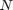, a linear system dynamics 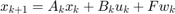 for 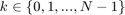, and a target tube 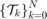, we wish to design an admissible controller that maximizes the probability of the state staying with the target tube. This maximal reach probability, denoted by
, a time horizon 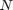, a linear system dynamics 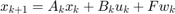 for 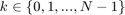, and a target tube 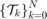, we wish to design an admissible controller that maximizes the probability of the state staying with the target tube. This maximal reach probability, denoted by  , is obtained by solving the following optimization problem
, is obtained by solving the following optimization problem
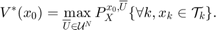
Here, 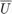 refers to the control policy which satisfies the control bounds specified by the input space 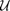 over the entire time horizon , ![$X= {[x_1\ x_2\ \ldots\ x_N]}^\top$](dubinsSReachSetGauss_eq11126846126939553872.png) is the concatenated state vector, and the target tube is a sequence of sets . Here, 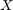 is a random vector with probability measure 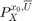 which is a parameterized by the initial state and policy .
is the concatenated state vector, and the target tube is a sequence of sets . Here, 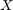 is a random vector with probability measure 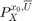 which is a parameterized by the initial state and policy .
In the general formulation requires is given by a sequence of (potentially time-varying and nonlinear) state-feedback controllers. To compute such a policy, we have to resort to dynamic programming which suffers from the curse of dimensionality. See these papers for details Abate et. al, Automatica, 2008, Summers and Lygeros, Automatica, 2010, and Vinod and Oishi, IEEE Trans. Automatic Control, 2018 (submitted).
Verification via SReachSet
These approaches utilizes the convexity and compactness guarantees of the stochastic reach set to the problem of stochastic reachability of a target tube as discussed in
- A. Vinod and M. Oishi, "Scalable underapproximative verification of stochastic LTI systems using convexity and compactness," In Proc. Hybrid Syst.: Comput. & Ctrl., pages 1--10, 2018. HSCC 2018.
- A. Vinod and M. Oishi, "Stochastic reachability of a target tube: Theory and computation," IEEE Transactions in Automatic Control, 2018 (submitted) https://arxiv.org/pdf/1810.05217.pdf.
The three different approaches explored in this example are
- Chance-constrained open-loop-based verification (Linear program approach)
- Genz's algorithm+MATLAB's patternsearch+open-loop-based verification
- Lagrangian-based underapproximation
While the first two methods use ray-shooting and SReachPoint to compute a polytopic underapproximation, the third approach utilizes Lagrangian-based underapproximation as described in
- J. D. Gleason, A. P. Vinod, M. M. K. Oishi, "Underapproximation of Reach-Avoid Sets for Discrete-Time Stochastic Systems via Lagrangian Methods," in Proceedings of the IEEE Conference on Decision and Control, 2017.
In this example, we perform controller synthesis that maximizes the probability of a Dubin's vehicle to stay within a time-varying collection of target sets. We model the Dubin's vehicle with known turning rate sequence as a linear time-varying system.
Dubin's vehicle dynamics
We consider a Dubin's vehicle with known turning rate sequence ![$\overline{\omega} = {[\omega_0\ \omega_1\ \ldots\ \omega_{T-1}]}^\top \in R^T$](dubinsSReachSetGauss_eq07062630063191653858.png) , with additive Gaussian disturbance. Specifically, we consider 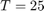 and set the turning rate to 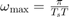 for the first half of the time interval, and 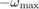 for the rest of the time interval. Here, 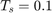 is the sampling time. The resulting dynamics are,
, with additive Gaussian disturbance. Specifically, we consider 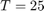 and set the turning rate to 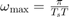 for the first half of the time interval, and 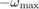 for the rest of the time interval. Here, 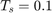 is the sampling time. The resulting dynamics are,
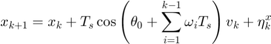
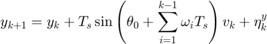
where 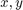 are the positions (state) of the Dubin's vehicle in 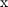- and  - axes, 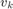 is the velocity of the vehicle (input), 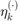 is the additive Gaussian disturbance affecting the dynamics, and 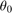 is the initial heading direction. We define the disturbance as 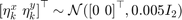.
- axes, 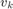 is the velocity of the vehicle (input), 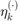 is the additive Gaussian disturbance affecting the dynamics, and 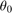 is the initial heading direction. We define the disturbance as 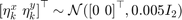.
n_mcarlo_sims = 1e2; % Monte-Carlo simulation particles sampling_time = 0.1; % Sampling time init_heading = pi/10; % Initial heading % Known turning rate sequence time_horizon = 25; omega = pi/time_horizon/sampling_time; half_time_horizon = round(time_horizon/2); turning_rate = [omega*ones(half_time_horizon,1); -omega*ones(half_time_horizon,1)]; % Input space definition umax = 10; input_space = Polyhedron('lb',0,'ub',umax); % Disturbance matrix and random vector definition dist_matrix = eye(2); eta_dist_gauss = RandomVector('Gaussian',zeros(2,1), 1e-3 * eye(2)); % LTV system definition [sys_gauss, heading_vec] = getDubinsCarLtv('add-dist', turning_rate, ... init_heading, sampling_time, input_space, dist_matrix, eta_dist_gauss); [~,H,~] = sys_gauss.getConcatMats(time_horizon);
Target tube definition
We define the target tube to be a collection of time-varying boxes  where is the time horizon.
where is the time horizon.
In this problem, we define 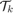 to be centered about the nominal trajectory with fixed velocity of 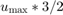 (faster than the maximum velocity allowed) and the heading angle sequence with 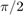 removed. The half-length of these boxes decay exponentially with a time constant which is 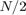.
box_halflength_at_0 = 4; % Box half-length at t=0 no_of_direction_vectors_ccc = 16; time_const = 1/2*time_horizon; % Time constant characterize the % exponentially decaying box half-length v_nominal = umax * 2/3; % Nominal trajectory's heading velocity % Construct the nominal trajectory center_box_X = [zeros(2,1); H * (v_nominal * ones(time_horizon,1))]; center_box = reshape(center_box_X,2,[]); % Target tube definition as well as plotting target_tube_cell = cell(time_horizon + 1,1); % Vector to store target sets figure(100);clf;hold on for itt = 0:time_horizon % Define the target set at time itt target_tube_cell{itt+1} = Polyhedron(... 'lb',center_box(:, itt+1) -box_halflength_at_0*exp(- itt/time_const),... 'ub', center_box(:, itt+1) + box_halflength_at_0*exp(- itt/time_const)); if itt==0 % Remember the first the tube h_target_tube = plot(target_tube_cell{1},'alpha',0.5,'color','y'); else plot(target_tube_cell{itt+1},'alpha',0.08,'LineStyle',':','color','y'); end end axis equal h_nominal_traj = scatter(center_box(1,:), center_box(2,:), 50,'ks','filled'); h_vec = [h_target_tube, h_nominal_traj]; legend_cell = {'Target tube', 'Nominal trajectory'}; legend(h_vec, legend_cell, 'Location','EastOutside', 'interpreter','latex'); xlabel('x'); ylabel('y'); axis equal box on; grid on; drawnow; % Target tube definition target_tube = Tube(target_tube_cell{:}); % % Threshold of interest --- Stochastic reach set at this alpha % prob_thresh = 0.8;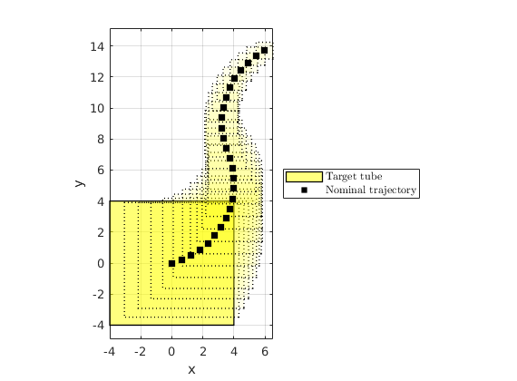
Convex chance constrained approach
fprintf('\n\nConvex chance-constrained approach\n\n'); % Set of direction vectors theta_vector_ccc = linspace(0, 2*pi, no_of_direction_vectors_ccc+1); theta_vector_ccc = theta_vector_ccc(1:end-1); set_of_direction_vectors_ccc = [cos(theta_vector_ccc); sin(theta_vector_ccc)]; timer_polytope_ccc = tic; opts = SReachSetOptions('term', 'chance-open', 'pwa_accuracy', 1e-3, ... 'set_of_dir_vecs', set_of_direction_vectors_ccc, ... 'init_safe_set_affine',Polyhedron(),'verbose', 1); [ccc_polytope, extra_info] = SReachSet('term','chance-open', sys_gauss, ... prob_thresh, target_tube, opts); elapsed_time_polytope_ccc = toc(timer_polytope_ccc); fprintf('Time taken for computing the polytope (CCC): %1.3f s\n', ... elapsed_time_polytope_ccc);
Convex chance-constrained approach Maximum reach probability: 1.00 Computing the polytope via a maximally safe initial state Analyzing direction : 16/ 16 Computing the polytope via the Chebyshev center Analyzing direction : 16/ 16 Time taken for computing the polytope (CCC): 25.715 s
Lagrangian over approximation
fprintf('\n\nLagrangian-based approach for overapproximation\n\nSet options\n'); timer_lagover = tic; n_dim = sys_gauss.state_dim; lagover_options = SReachSetOptions('term', 'lag-over', ... 'bound_set_method', 'ellipsoid', 'verbose', 1, ... 'compute_style', 'support', 'sys', sys_gauss, 'n_vertices', ... 2^n_dim * 7 + 2*n_dim); polytope_lagover = SReachSet('term', 'lag-over', sys_gauss, prob_thresh, ... target_tube, lagover_options); elapsed_time_lagover = toc(timer_lagover);
Lagrangian-based approach for overapproximation Set options Spreading 32 unit-length vectors in 2-dim space Analyzing 7 unit-length vectors in first quadrant 1. Setting up the CVX problem... 1 | 2 | 3 | 4 | 5 | 6 | 7 | Solving the CVX problem...done Status: Solved Sum of slack: 2.847e-02 (< 1.000e-08) Change in opt cost: 1.401e-01 (< 1.000e-05) 2. Setting up the CVX problem... 1 | 2 | 3 | 4 | 5 | 6 | 7 | Solving the CVX problem...done Status: Solved Sum of slack: 4.770e-02 (< 1.000e-08) Change in opt cost: 2.866e-02 (< 1.000e-05) 3. Setting up the CVX problem... 1 | 2 | 3 | 4 | 5 | 6 | 7 | Solving the CVX problem...done Status: Solved Sum of slack: 5.012e-02 (< 1.000e-08) Change in opt cost: 2.559e-03 (< 1.000e-05) 4. Setting up the CVX problem... 1 | 2 | 3 | 4 | 5 | 6 | 7 | Solving the CVX problem...done Status: Solved Sum of slack: 5.014e-02 (< 1.000e-08) Change in opt cost: 2.230e-05 (< 1.000e-05) 5. Setting up the CVX problem... 1 | 2 | 3 | 4 | 5 | 6 | 7 | Solving the CVX problem...done Status: Solved Sum of slack: 5.014e-02 (< 1.000e-08) Change in opt cost: 2.809e-09 (< 1.000e-05) 6. Setting up the CVX problem... 1 | 2 | 3 | 4 | 5 | 6 | 7 | Solving the CVX problem...done Status: Solved Sum of slack: 5.014e-02 (< 1.000e-08) Change in opt cost: 9.471e-09 (< 1.000e-05) 7. Setting up the CVX problem... 1 | 2 | 3 | 4 | 5 | 6 | 7 | Solving the CVX problem...done Status: Solved Sum of slack: 5.014e-02 (< 1.000e-08) Change in opt cost: 1.211e-09 (< 1.000e-05) 8. Setting up the CVX problem... 1 | 2 | 3 | 4 | 5 | 6 | 7 | Solving the CVX problem...done Status: Solved Sum of slack: 5.014e-02 (< 1.000e-08) Change in opt cost: 1.303e-08 (< 1.000e-05) 9. Setting up the CVX problem... 1 | 2 | 3 | 4 | 5 | 6 | 7 | Solving the CVX problem...done Status: Solved Sum of slack: 5.014e-02 (< 1.000e-08) Change in opt cost: 4.355e-09 (< 1.000e-05) 10. Setting up the CVX problem... 1 | 2 | 3 | 4 | 5 | 6 | 7 | Solving the CVX problem...done Status: Solved Sum of slack: 4.496e-02 (< 1.000e-08) Change in opt cost: 3.328e-04 (< 1.000e-05) 11. Setting up the CVX problem... 1 | 2 | 3 | 4 | 5 | 6 | 7 | Solving the CVX problem...done Status: Solved Sum of slack: 3.710e-02 (< 1.000e-08) Change in opt cost: 1.117e-03 (< 1.000e-05) 12. Setting up the CVX problem... 1 | 2 | 3 | 4 | 5 | 6 | 7 | Solving the CVX problem...done Status: Solved Sum of slack: 2.977e-12 (< 1.000e-08) Change in opt cost: 1.329e-01 (< 1.000e-05) 13. Setting up the CVX problem... 1 | 2 | 3 | 4 | 5 | 6 | 7 | Solving the CVX problem...done Status: Solved Sum of slack: 4.101e-11 (< 1.000e-08) Change in opt cost: 3.859e-03 (< 1.000e-05) 14. Setting up the CVX problem... 1 | 2 | 3 | 4 | 5 | 6 | 7 | Solving the CVX problem...done Status: Solved Sum of slack: 2.625e-12 (< 1.000e-08) Change in opt cost: 1.613e-04 (< 1.000e-05) 15. Setting up the CVX problem... 1 | 2 | 3 | 4 | 5 | 6 | 7 | Solving the CVX problem...done Status: Solved Sum of slack: 3.546e-11 (< 1.000e-08) Change in opt cost: 6.136e-07 (< 1.000e-05) Completed spreading the vectors! Computing Lagragian over approximation Evaluating support function: 32/ 32
Lagrangian under approximation
fprintf('\n\nLagrangian-based approach for underapproximation\n\n'); timer_lagunder = tic; lagunder_options = SReachSetOptions('term', 'lag-under', ... 'bound_set_method', 'ellipsoid', 'compute_style', 'vfmethod', ... 'vf_enum','lrs', 'verbose', 1); [polytope_lagunder, extra_info_under] = SReachSet('term', 'lag-under', ... sys_gauss, prob_thresh, target_tube, lagunder_options); elapsed_time_lagunder = toc(timer_lagunder); fprintf('\n\nProbability threshold requested: %1.2f\n', prob_thresh); fprintf(['Elapsed time: (chance-open) %1.3f | (lag-under) %1.3f |',... ' (lag-over) %1.3f seconds\n'], elapsed_time_polytope_ccc, ... elapsed_time_lagunder, elapsed_time_lagover);
Lagrangian-based approach for underapproximation Computing Lagragian under approximation Time_horizon: 25 Computation for time step: 24 Computation for time step: 23 Computation for time step: 22 Computation for time step: 21 Computation for time step: 20 Computation for time step: 19 Computation for time step: 18 Computation for time step: 17 Computation for time step: 16 Computation for time step: 15 Computation for time step: 14 Computation for time step: 13 Computation for time step: 12 Computation for time step: 11 Computation for time step: 10 Computation for time step: 9 Computation for time step: 8 Computation for time step: 7 Computation for time step: 6 Computation for time step: 5 Computation for time step: 4 Computation for time step: 3 Computation for time step: 2 Computation for time step: 1 Computation for time step: 0 Probability threshold requested: 0.80 Elapsed time: (chance-open) 25.715 | (lag-under) 0.366 | (lag-over) 57.722 seconds
Testing the controller using a far-away (from target) safe initial
fprintf(['\n\nTesting the controller for some initial point in lag-under ',... 'polytope\n\n']); cvx_begin quiet variable initial_state(sys_gauss.state_dim, 1) minimize ([1 1]*initial_state) subject to polytope_lagunder.A*initial_state <= polytope_lagunder.b; target_tube(1).A*initial_state <= target_tube(1).b; cvx_end switch cvx_status case 'Solved' fprintf('Testing initial state: '); disp(initial_state'); % Create a controller based on the underapproximation srlcontrol = SReachLagController(sys_gauss, ... extra_info_under.bounded_dist_set, ... extra_info_under.stoch_reach_tube); % Generate Monte-Carlo simulations using the srlcontrol and % generateMonteCarloSims timer_mcarlo = tic; [X,U,W] = generateMonteCarloSims(n_mcarlo_sims, sys_gauss, ... initial_state, time_horizon, srlcontrol, [], ... lagunder_options.verbose); elapsed_time_mcarlo = toc(timer_mcarlo); avg_time_mc = elapsed_time_mcarlo / n_mcarlo_sims; % % Plot the convex hull of the spread of the points polytopesFromMonteCarloSims(X, 4, [1,2], {'color','k','alpha',0}); a = gca; for tindx = 1:time_horizon-1 a.Children(tindx).Annotation.LegendInformation.IconDisplayStyle= ... 'off'; end a.Children(1).Annotation.LegendInformation.IconDisplayStyle='on'; a.Children(1).DisplayName = 'Trajectory spread at various time steps'; % Plot the initial state scatter(initial_state(1), initial_state(2), 200, 'ko', 'filled', ... 'DisplayName','Initial state'); otherwise end init_state_lag = initial_state; optimal_mean_trajectory_lag = reshape(sum(X, 2) / size(X, 2), 2, []);
Testing the controller for some initial point in lag-under polytope Testing initial state: -1.5154 -1.6927 Getting 100 realizations...Done Pruning infeasible disturbance trajectories, when it violates at a particular time instant... Done. Found 85 feasible disturbance trajectories (~ 0.8500 success probability) Rearranging realizations... Analyzing particles: 85/ 85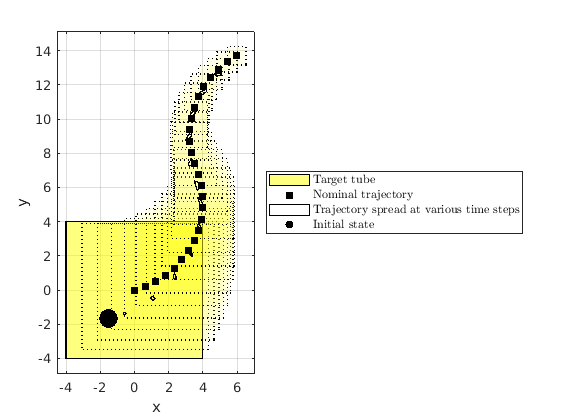
Plot the set
axis_v = axis(); figure(101); clf hold on; plot(target_tube(1),'color','y'); plot(polytope_lagover,'color','r'); plot(ccc_polytope,'color','c','alpha',0.8); plot(polytope_lagunder,'color','m','alpha',0.8); legend('Target set at t=0','lag-over', 'chance-open', 'lag-under', ... 'Location','NorthWest','AutoUpdate','off'); for itt = 2:time_horizon % Define the target set at time itt plot(target_tube_cell{itt+1},'alpha',0.08,'LineStyle',':','color','y'); end title(sprintf('Stochastic reach sets at \\alpha=%1.2f', prob_thresh)); axis equal axis(axis_v); box on;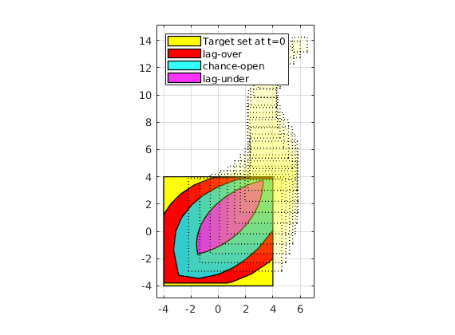